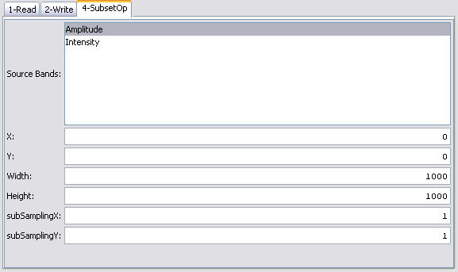

| Product Subset | |
If you are not interested in the whole image of a product, you may specify an area of the product to be loaded. You can select the area by entering the top left corner and the width and height. You can also specify a sub-sampling in the X or Y directions.
